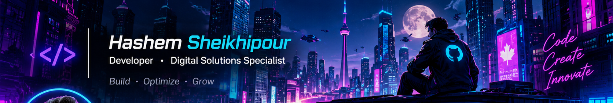

WEB DEVELOPER & DIGITAL SOLUTIONS SPECIALIST
PHP · LARAVEL · WORDPRESS · DIGITAL GROWTH
PHP · LARAVEL · WORDPRESS · DIGITAL GROWTH
> whoami
I'm Hashem Sheikhypour — a web developer and digital solutions specialist interested in building useful web experiences and helping businesses grow online.
- Web development with PHP, Laravel and WordPress
- Front-end development with HTML, CSS and JavaScript
- Mobile development with Flutter and Dart
- Technical SEO, Google Ads and digital growth
- Building practical tools and experimenting with AI-powered workflows.
> tech_stack
> featured_project.exe
⚡ A CONTINUOUSLY EVOLVING TOOL COLLECTION
AI PROJECTS PERSIAN
A growing hub of practical web tools, powered by AI-assisted development.
One hub. Multiple useful tools. Built for the Persian-speaking web community.
ACTIVELY DEVELOPED6 ONLINE TOOLSFREE ACCESS
A collection of lightweight, modular web apps designed to solve practical everyday challenges in content creation, prompt engineering, SEO, campaign tracking and design workflows.
| Tool | What it does |
|---|---|
| Lorem Plus | Persian placeholder content and SEO-friendly text generation |
| Prompt+ | AI prompt engineering and optimization |
| Placeholder Pro | Generate placeholder images, SVG assets and standard-size visuals |
| Site Auditor Pro | Website SEO, performance and accessibility auditing |
| UTM Builder Pro | Build and manage campaign tracking links |
| Schema Generator Pro | Generate and validate structured data (JSON-LD) |
Built with a modular mindset: AI-assisted development, independent tools with shared UI components, a lightweight web stack, and continuous iteration.
> connect
Have an idea or a project in mind? Let's connect.